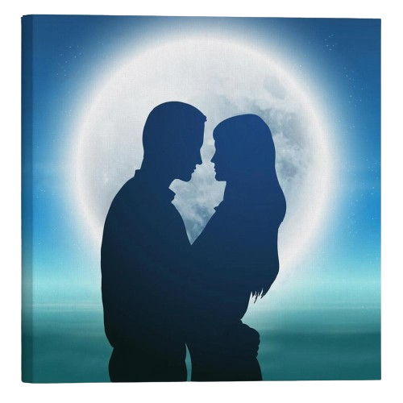

Розділ 1.1 Знайомство з Мар'янкою
Мар'янка з Косівської Поляни завжди вирізнялася своєю гарністю, кмітливістю та великим бажанням навчатися. Після закінчення школи вона вирушила в місто Ужгород на навчання. Навчання Мар'янці виявилося викликом через некомпетентність деяких викладачів. Незважаючи на труднощі, вона виявила велику силу волі та наполегливість, не здавалась перед труднощами і продовжувала прагнути до своєї мети в отриманні вищої освіти в Ужгороді.
Розділ 1.2 Знайомство з Іванком
Іванко хлопець із затишного села Сторожниця, завжди виділявся своєю старанністю та розумом. Будучи непоганим учнем у школі, він вирішив розширити свій горизонт та вирушити на навчання в Ужгород. Там, в місті, Іванко прагнув отримати нові знання та вдосконалити свої навички, несучи з собою дух села і своїх прадідівських традицій.
Розділ 1.3 Знайомство Мар'янки та Іванка
Ужгород, місто старовинних вуличок і затишних кав'ярень, став місцем, де розцвітала неймовірна історія Мар'янки та Іванка. Обидва вони обрали цей університет для отримання вищої освіти, але їхні шляхи перетнулися не лише в аудиторіях.
Іванко, молодий і амбіційний студент, прийшов на перше заняття нового семестру. Йому не терпілося почати вивчати нові предмети, але, коли він увійшов у велику аудиторію, його увагу вразила вишукана дівчина, яка вже сиділа за партою.
Мар'янка, з вишуканим виглядом і виразною енергією, сиділа, переглядаючи нотатки. Її волосся було як сонячні промені, а в очах блищали цікавість і розум. Іванко зупинився на мить і розгублено подивився на неї. На щастя, вчитель прийшов вчасно, а Іванко швидко зайняв своє місце, але в серці у нього уже засвітився вогник цікавості.
Іванко став помічати Мар'янку все частіше на коридорах університету. Він намагався зустрітися з нею, але завжди щось заважало. Та одного дня, коли вони випадково зустрілися в бібліотеці, обидва вони вирішили, що це вже не може бути випадковість.
Одного теплого весняного вечора Іванко запросив Мар'янку на прогулянку по старому місту. Вони блукали вуличками, де кожен камінчик міг розповісти власну історію. Під час цієї прогулянки вони зрозуміли, що вже не можуть уявити своє життя без одне одного.
Так розпочалася неймовірна історія кохання Мар'янки та Іванка, яка розцвітала в серці Ужгорода. Їхня знайомість виявилася початком чарівного шляху, який перетворився на їхнє спільне життя, наповнене любов'ю, розумінням та пригодами.
Розділ 2 Прогулянки
Мар'янка та Іванок кохали прогулянки, які робили їх ближчими. Кожна їхня спільна кава перетворювалася на незабутню подорож через вулички міста. Вони не тільки насолоджувалися ароматом кави, але й обговорювали свої мрії та плани на майбутнє.
Час випливаючих з цього розмов та спільних прогулянок був магічним. Іванко та Мар'янка ніяк не могли відпустити одне одного, і їхня взаємна прив'язаність лише зміцнювалася з кожним новим днем. Навіть до самого ранку вони можливо були знайтися гуляючи під зірками, обмінюючись теплом та посмішками.
Одним вечором, сидячи в обіймах одне одного, вони вирішили подивитися разом проект "Половинки". Цей проект став для них чимось більшим, ніж просто проект - це були різні історії кохання людей. За кожним кадром була їхня власна історія, яку вони продовжували писати разом, подорожуючи через кавові паузи та ночі, що належали тільки їм.